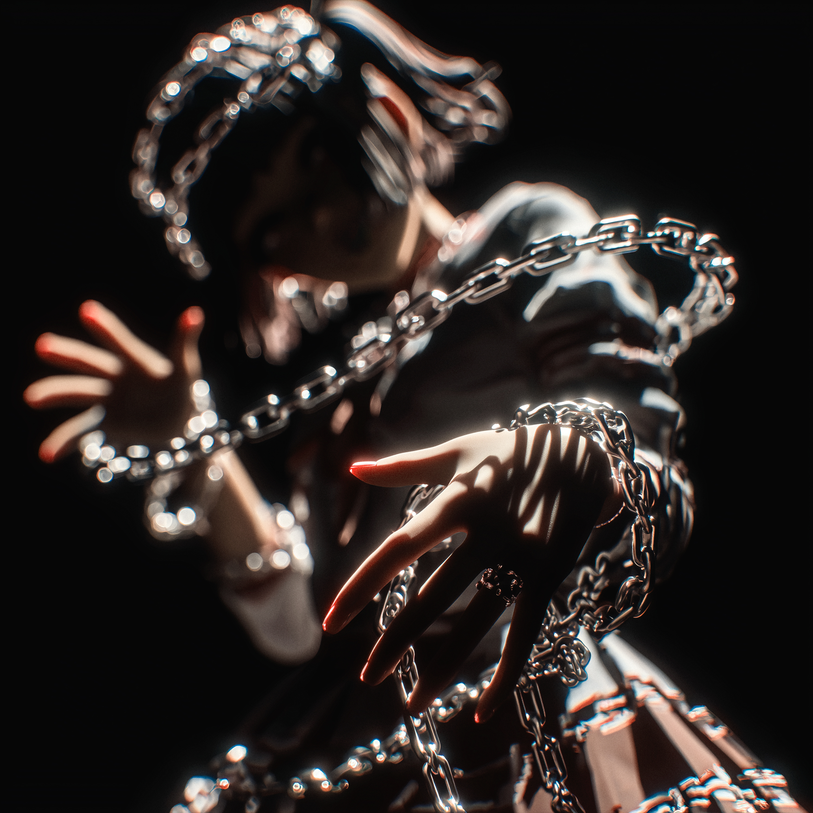
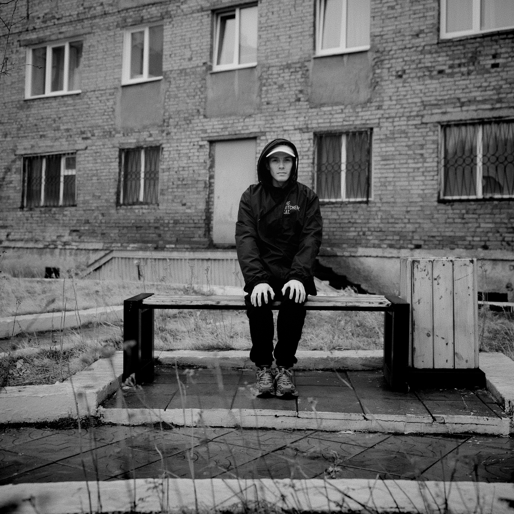
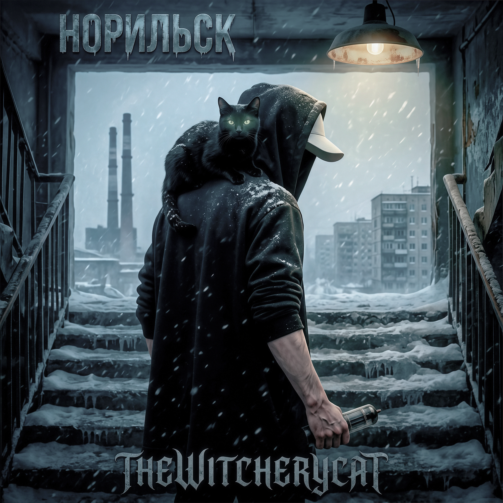
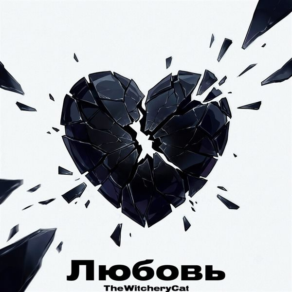
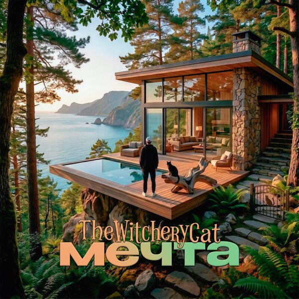
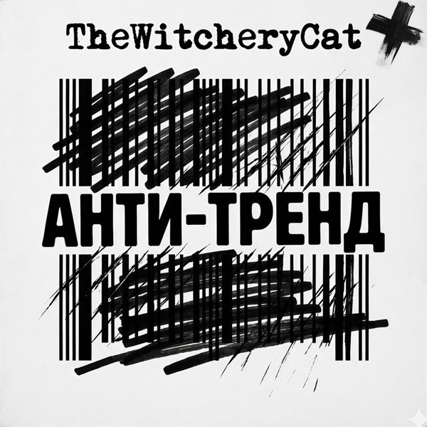
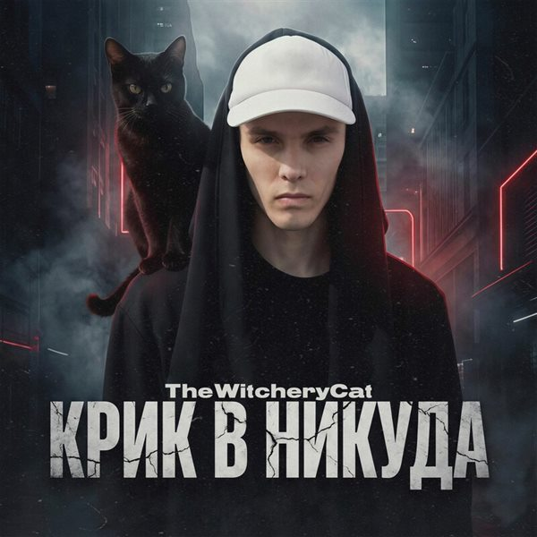
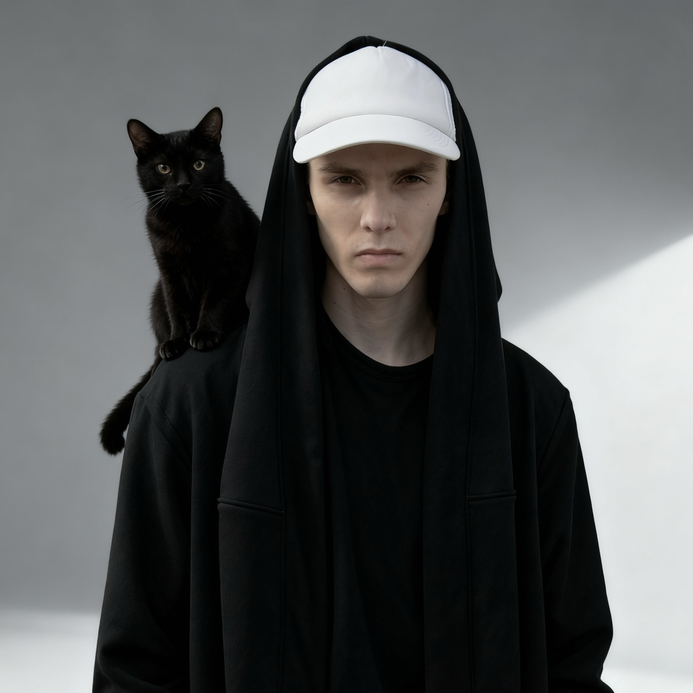

Эксклюзивное интервью для музыкального портала
О творческом пути и новых проектах
Данил Епанчин
Создаю уникальный звук, объединяющий рэп и хип-хоп в танцевальном стиле
Узнайте о пути, который сформировал уникальный художественный голос TheWitcheryCat
TheWitcheryCat (настоящее имя - Епанчин Данил Владимирович) - музыкант и продюсер из Норильска, создающий уникальный звук, объединяющий рэп и хип-хоп в танцевальном стиле. В 2025 году артист представил несколько значимых работ: совместный трек "TheWitcheryCat feat. CodEK$ - Детка Remix", а также сольные проекты "Крик в никуда" и "ПОСЛЕДНИЙ ДРАЙВ В НИКУДА". Его творчество фокусируется на честном выражении своих мыслей и эмоций через звук и слово, избегая шаблонов и клише.
Начал увлекаться музыкой и звукозаписью в Норильске
Подростковые годы
Дебютный сингл "PULL UP (EVB Remix)", обозначивший начало профессиональной карьеры
2022
Работа над синглом "АНТИ-ТРЕND" и другими треками
2023-2026

Основные релизы и музыкальные проекты TheWitcheryCat







Присоединяйтесь к TheWitcheryCat на этих предстоящих живых мероприятиях
Подпишитесь на обновления и первыми узнавайте о новых концертах
Подписаться в VKИсследуйте аудиоэксперименты, визуальные путешествия и запечатленные моменты TheWitcheryCat

3:01
Выберите видео для воспроизведения

Все фотографии доступны в альбомах сообщества ВКонтакте
Смотреть все фотоЧто пишут о творчестве TheWitcheryCat
«TheWitcheryCat создает уникальный звук, объединяющий рэп и хип-хоп в танцевальном стиле. Его музыка находит отклик у слушателей благодаря честному самовыражению.»
Музыкальный портал • ★★★★☆
«Артист из Норильска доказывает, что даже в удаленных регионах можно создавать актуальную музыку, которая будет слышна по всему миру.»
Культурный журнал • ★★★★☆
«Каждый релиз TheWitcheryCat - это новое путешествие в мир эмоций и переживаний, где артист исследует темы личного роста и социальных реалий.»
Музыкальный блог • ★★★★★
Коротко о TheWitcheryCat — кто это, откуда и где слушать
TheWitcheryCat - рэп-исполнитель и продюсер из Норильска. Настоящее имя - Данил Владимирович Епанчин. Пишет музыку в хип-хоп и клубных стилях, занимается музыкой с 2021 года.
Епанчин Данил Владимирович. TheWitcheryCat (иногда пишут «The Witchery Cat») - его сценическое имя.
Из Норильска. Северу посвящён трек «Норильск» (2026) - мрачный индустриальный хип-хоп о северной вьюге и внутреннем преодолении.
Да. С 2022 по 2025 год Данил выпускал музыку под именем BlackBabyCat - например, «Молодой», «Затмение», «Детка», «ИЗО ЛЬДА В NEON» и «ПОСЛЕДНИЙ ДРАЙВ В НИКУДА». Новые релизы выходят под именем TheWitcheryCat.
Да. TheWitcheryCat® — зарегистрированный в Роспатенте товарный знак, свидетельство № 1263667 (заявка № 2026735773 от 19.03.2026). Правообладатель — Епанчин Данил Владимирович. Знак охраняется для музыки и звукозаписей, концертов и услуг артиста, а также для одежды, обуви и головных уборов.
Рэп и хип-хоп, в том числе клубные и танцевальные треки. Последние релизы - мрачный альтернативный и индустриальный хип-хоп; есть и эксперименты с роком и фанком.
«Психолог» (октябрь 2026), «Любовь» (август 2026), «Норильск» (июль 2026), «Мечта» (май 2026) и «АНТИ-ТРЕНД» (февраль 2026). 27 ноября 2026 выходит «Любовь как яд» совместно с MIKKY.
С MIKKY («Любовь как яд»), CodEK$ («Детка Remix»), а под именем BlackBabyCat - с mram0r («HARDWORKING»), BlackInvite («Bali») и SVFVRI («SHELMA»).
На Яндекс.Музыке, в VK Музыке, на YouTube и других площадках. Ссылки на все релизы - в разделе «Избранные работы» на этом сайте.
По почте Cat@TheWitcheryCat.ru или в сообществе ВКонтакте vk.com/TheWitcheryCat - по сотрудничеству, выступлениям и фитам.
Бесплатный календарь смен, дел и денег
График смен, задачи, доходы и расходы в одном календаре. Видно, сколько можно тратить до зарплаты и сколько приносят вклады. Офлайн, без рекламы.
Подробнее и скачатьВидео под музыку, как в TikTok
Съёмка клипов под свой трек на DJI Osmo Pocket 3, веб-камеру или телефон: отсчёт, отрезки, синхрон музыки и картинки до кадра.
Подробнее и скачатьЗаинтересованы в сотрудничестве или хотите забронировать TheWitcheryCat для вашего мероприятия? Свяжитесь с нами ниже.
Норильск, Россия
Доступно на всех стриминговых платформах